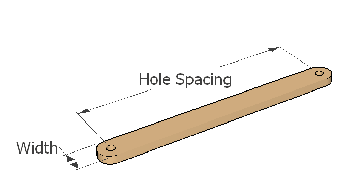

Beamer

Beam settings
Advanced
Hole diameter (in)
Beam Width (in)
End Hole spacing (in)
Material Thickness (in)
Bit Diameter (in)
1/16"
1/8"
3/16"
1/4"
Cut lightening holes in beam?
Feed Rate (in/s)
Thru Cut (in)
Safe Z (in)
Done
Okay